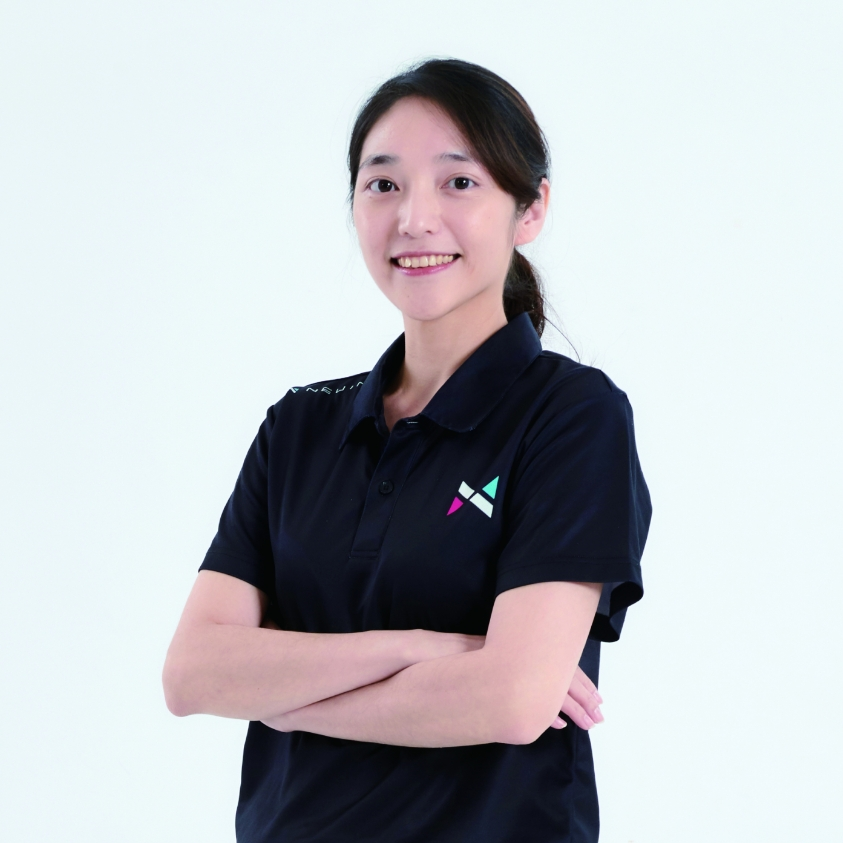
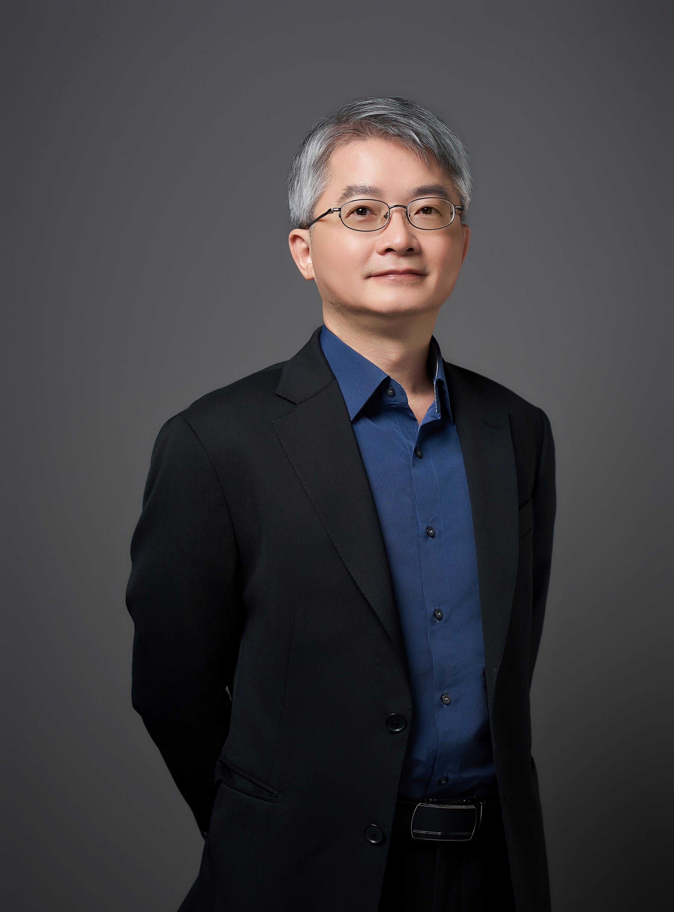
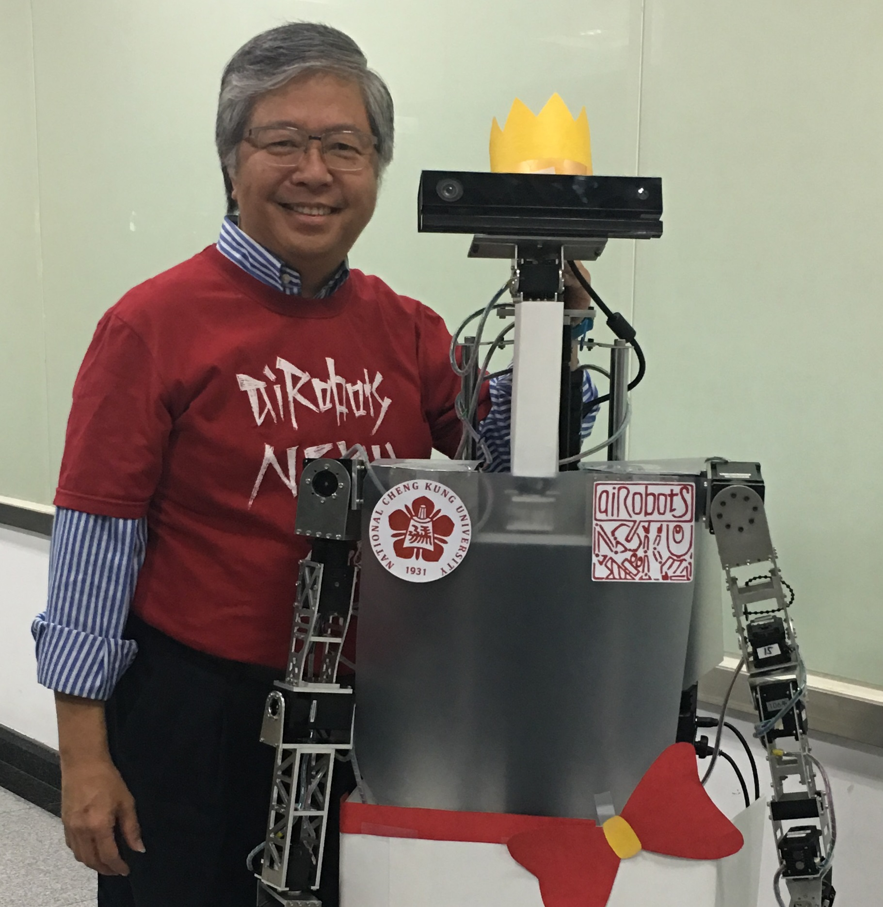

計畫團隊
主持人與協同主持人
張嘉惠 教授
計畫主持人 | 國立中央大學資訊工程學系
研究興趣包括Web資訊整合、自然語言理解、資料探勘、智慧計算等。現任國科會工程處智慧計算學門召集人。

戴敏育 教授
協同主持人 | 國立臺北大學資訊管理研究所
專精於人工智慧、生成式AI、永續綠色金融科技。現任金融科技暨綠色金融研究中心主任。

胡敏君 教授
協同主持人 | 國立清華大學資訊工程學系
專精於多媒體運算、電腦視覺、電腦圖學、擴增實境與虛擬實境。
Agentic AI 諮詢委員
許秉瑜 教授
國立中央大學企業管理學系
專精於企業e化管理、資料挖礦、商業智慧與ERP系統管理。
黃三益 特聘教授
國立中山大學資訊管理學系
專精於資料庫系統、文字探勘、資料探勘、工作流程管理。
劉昭麟 特聘教授
國立政治大學資訊科學系
專精於人工智慧、資料分析與知識探勘、數位人文、計算語言學、自動推理與模型建構。
梁伯嵩 處長
聯發科技
專精於數位 IC 設計、處理機架構、SoC 架構、新興運算平台架構(AI運算、量子計算、區塊鏈)、科技管理與策略分析。現任聯發科技前瞻技術平台資深處長。
陳柏琳 教授
國立臺灣師範大學資訊工程學系
專精於語音辨識、資訊檢索、自然語言處理、機器學習。
林縣城 副總經理
叡揚資訊
現任叡揚資訊技術服務總處暨創新研發中心副總經理。
Robotics AI 諮詢委員

林沛群 終身特聘教授
國立臺灣大學機械工程學系
專精於機器人、仿生工程、機械系統設計、機電整合/運動控制。
張禎元 講座教授
國立清華大學動力機械工程學系
專精於機電一體化、機器人、機械振動、動力系統與控制、智慧機械和製造等領域。
楊谷洋 教授
陽明交通大學電機工程學系
專精於機器人學習控制與力控制、機器人路徑規劃與校正、VR/機器人整合、生物控制系統。

李祖聖 特聘教授
國立成功大學電機工程學系
專精於人工智慧和生物智慧及其應用、人形機器人、基於人工智慧的服務機器人、模糊系統與控制、機電一體化和4WIS4WID車輛。
葉廷仁 特聘教授
國立清華大學動力機械工程系
專精於動態系統建模與控制、非線性控制理論、以及機器人應用。